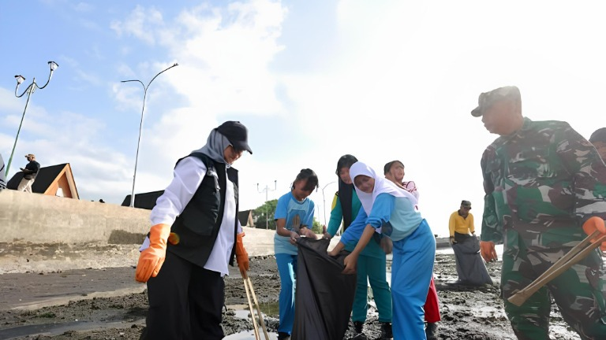
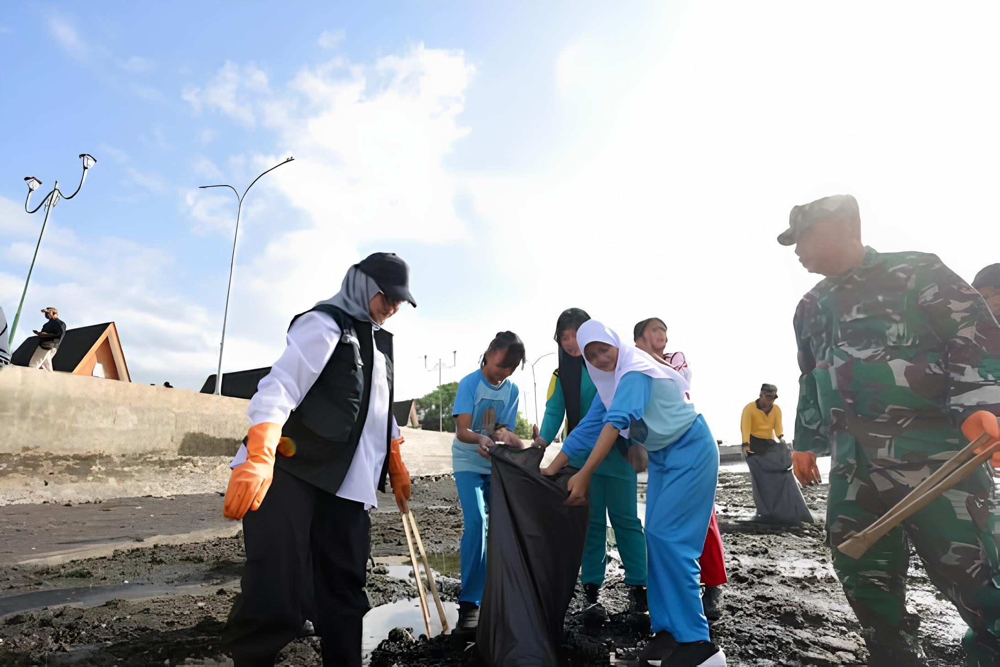

LOKAL
Kolaborasi Warga dan Petugas dalam Aksi Bersih Lingkungan
10 Okt 2026

10 Okt 2026

08 Okt 2026

Kegiatan bersih lingkungan menjadi salah satu bentuk kepedulian masyarakat terhadap kebersihan dan kelestarian kawasan sekitar. Dalam gambar terlihat sejumlah warga dan petugas bekerja bersama mengumpulkan sampah di area terbuka.
10 Okt 2026 • Oleh Isabella dan Lucas
Kumpulan informasi terkini dan terpercaya seputar Pasuruan dan sekitarnya. Menyajikan kabar penting, kebijakan pemerintah, hingga aksi nyata masyarakat secara transparan.
Kegiatan bersih lingkungan menjadi salah satu bentuk kepedulian masyarakat terhadap kebersihan dan kelestarian kawasan sekitar.
Media memiliki peran penting dalam menyampaikan informasi mengenai berbagai peristiwa kepada masyarakat.
Koordinasi antarpemangku kepentingan merupakan salah satu aspek penting dalam mendukung pelaksanaan program pembangunan.
Pembangunan yang berkelanjutan membutuhkan kerja sama berbagai pihak, termasuk pemerintah, masyarakat, dan sektor terkait.


Ruang eksplorasi interaktif untuk mengenali keunikan dan kekayaan daerah Pasuruan. Sajian informasi terpadu mulai dari spot liburan, kelezatan kuliner, hingga tradisi lokal. Rencanakan perjalanan dan petualangan terbaik Anda bersama Pasinfo Jelajah.

Nikmati kesegaran alam dan suasana asri di salah satu destinasi wisata unggulan Pasuruan.
Lihat Destinasi
Rasakan cita rasa khas Pasuruan yang melegenda, pedasnya bikin nagih!
Lihat KulinerSeni tradisional yang menjadi warisan budaya dan kebanggaan masyarakat Pasuruan.
Lihat BudayaRagam acara menarik mulai dari festival budaya, musik, hingga pameran UMKM.
Lihat Acara